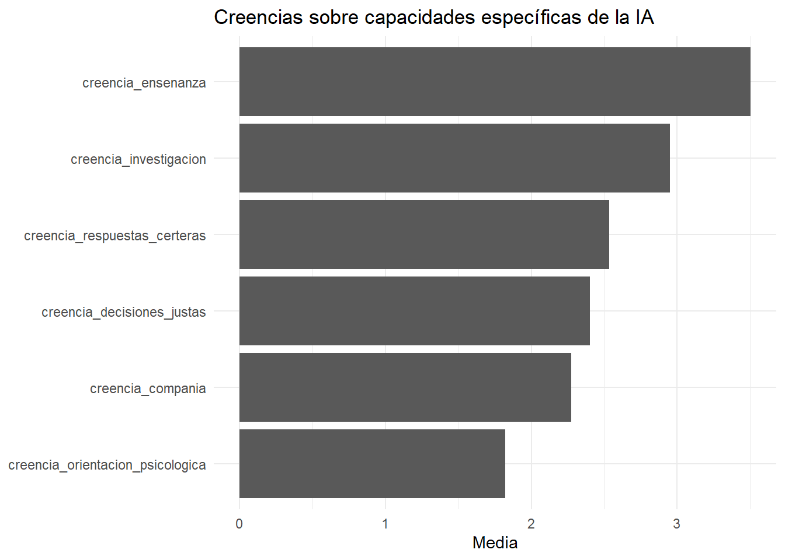

Rows: 139 Columns: 15
── Column specification ────────────────────────────────────────────────────────
Delimiter: ","
chr (3): grupo_edad, area_trabajo_grupo, frecuencia_uso_ia
dbl (12): id_caso, edad, actitud_positiva, actitud_trabajo_estudio, actitud_...
ℹ Use `spec()` to retrieve the full column specification for this data.
ℹ Specify the column types or set `show_col_types = FALSE` to quiet this message.
Rows: 139 Columns: 15
── Column specification ────────────────────────────────────────────────────────
Delimiter: ","
chr (3): grupo_edad, area_trabajo_grupo, frecuencia_uso_ia
dbl (12): id_caso, edad, actitud_positiva, actitud_trabajo_estudio, actitud_...
ℹ Use `spec()` to retrieve the full column specification for this data.
ℹ Specify the column types or set `show_col_types = FALSE` to quiet this message.
tabla_frecuencia %>%ggplot(aes(x = frecuencia_uso_ia, y = actitud_media)) +geom_col() +labs(x ="Frecuencia de uso de IA",y ="Actitud media hacia la IA",title ="Actitud hacia la IA según frecuencia de uso" ) +theme_minimal()
# A tibble: 2 × 2
variable media
<chr> <dbl>
1 actitud_ia 3.77
2 creencias_media 2.58
tabla_comparacion %>%ggplot(aes(x = variable, y = media)) +geom_col() +labs(x =NULL,y ="Media",title ="Actitud general y creencias específicas hacia la IA" ) +theme_minimal()
creencias_largo %>%group_by(creencia) %>%summarise(media =mean(valor)) %>%ggplot(aes(x =reorder(creencia, media), y = media)) +geom_col() +coord_flip() +labs(x =NULL,y ="Media",title ="Creencias sobre capacidades específicas de la IA" ) +theme_minimal()

Interpretación
Los resultados descriptivos permiten discutir una tensión central:
La actitud general hacia la IA puede ser favorable, pero esa valoración no se distribuye igual cuando preguntamos por capacidades concretas.
Esto permite pensar la aceptación de la IA como un fenómeno situado: no se acepta o rechaza “la IA” en abstracto, sino determinados usos, tareas y formas de relación con ella.
Ejercicio final
Elegí una pregunta y respondela con una tabla y un gráfico.
Ejemplos:
¿La actitud hacia la IA cambia según el área de trabajo?
¿La brecha entre actitud y creencias cambia según frecuencia de uso?
¿Qué grupo de edad muestra mayor actitud promedio?
¿Qué creencia específica tiene el promedio más bajo?
Cierre
El análisis descriptivo no agota una investigación, pero permite construir primeras respuestas empíricas y detectar nuevas preguntas.